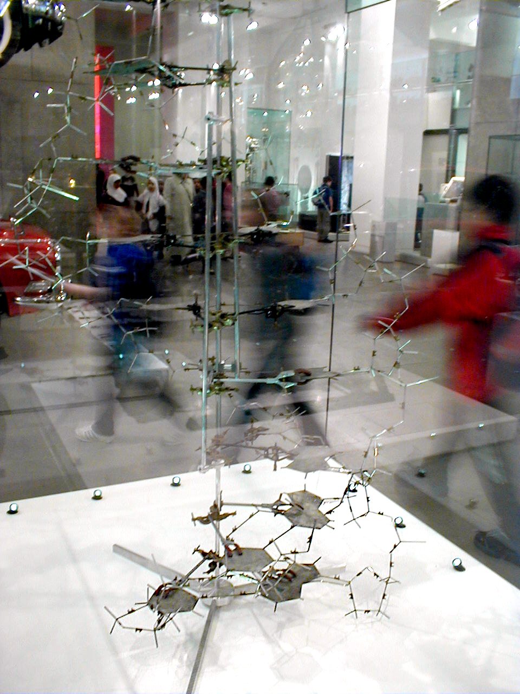
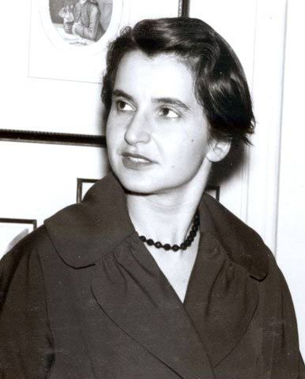

01
DNA · 1952
DNA: uma imagem decisiva

PESQUISADORA / INVENTORA
Rosalind Franklin
Os dados de difração de raios X de Rosalind Franklin foram essenciais para compreender a estrutura do DNA.
Sua pesquisa ofereceu evidências fundamentais para o modelo de dupla hélice.